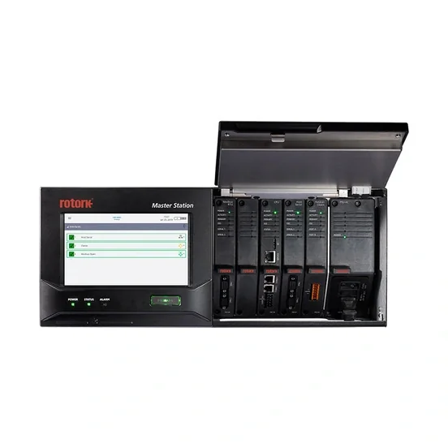

Positioner và bộ điều khiển định vị van chính xác theo tín hiệu 4-20mA.
ROTORK · MASTER STATION, NETWORKS & PROTOCOLS RANGE
Master Station Rotork
The Rotork Master Station provides the high integrity link from the Distributed Control System (DCS) to the devices in the field.It comes complete with a large touch screen interface to allow operators and engineers to see exactly what is happening to the system and the field devices at any time.A hot standby Rotork Ma

Ảnh sản phẩm chính thứcTỔNG QUAN MÃ MASTER STATION
Master Station – Thiết bị điều khiển & instrumentation Rotork
The Rotork Master Station provides the high integrity link from the Distributed Control System (DCS) to the devices in the field.It comes complete with a large touch screen interface to allow operators and engineers to see exactly what is happening to the system and the field devices at any time.A hot standby Rotork Master Station allows for continued availability of the system in the event of a component failure. Host ports allow connection to multiple host systems at the same time with redundant communication links where necessary. In the event of a fault occurring, the changeover to the standby is seamless without loss of data and control.Contact Us
Master Station thuộc range Master Station, Networks & Protocols của Rotork, dùng cho điều khiển vị trí, đo lường và giám sát hệ thống van. Fast Group Engineering — đơn vị phân phối Rotork chính hãng tại Việt Nam — cung cấp Master Station là hàng chính hãng, xuất xứ châu Âu, đầy đủ CO/CQ kèm hỗ trợ kỹ thuật lựa chọn cấu hình và báo giá.
Lưu ý mã hàng
Chưa có mã đặt hàng hoàn chỉnh từ nguồn chính thức; không dùng model_code thay cho part number.
XUẤT XỨ & CHỨNG TỪ
Master Station — hàng chính hãng, xuất xứ châu Âu, đầy đủ CO/CQ
Thương hiệuRotork · Anh Quốc / Châu Âu
Chứng từCO + CQ theo từng lô
Nhà phân phốiFast Group Engineering · VN
Master Station do Fast Group Engineering — đơn vị phân phối Rotork chính hãng tại Việt Nam — cung cấp là hàng chính hãng thương hiệu Rotork (trụ sở tại Anh Quốc, châu Âu). Mỗi lô Master Station đi kèm chứng nhận xuất xứ (CO) và chứng nhận chất lượng (CQ); xuất xứ cụ thể được xác nhận trên CO theo từng lô. Chúng tôi không suy đoán part number và đối chiếu cấu hình theo dữ liệu chính thức Rotork trước khi báo giá.
THÔNG SỐ ĐỊNH HƯỚNG
Đặc điểm kỹ thuật chính
Các giá trị mô tả phạm vi model. Datasheet của cấu hình được chọn là căn cứ cuối cùng.
01Single, dual and hot standby Rotork Master Station options
02Fully hot standby Rotork Master Station for continued availability of the system in the event of a component failure features replicated interfaces i.e. CPU, power supplies, display, network interfaces and control interfaces
03Multiple host port connectivity, Modbus® TCP (Ethernet) as standard with optional Modbus® RTU (serial)
04No specialist software required to configure the system
05Can be configured fully via the touch screen interface or web interface
06Large touch screen interface and web pages share the same intuitive menu structure focused on providing quick device set up, interrogation and issue resolution
07Dedicated service port to maintain separation between configuration, maintenance or monitoring systems and systems for controlling the process
08Choice of mounting options, 19” rack or panel mount Industry standard NAMUR NE107 diagnostics indication
09Modular design enables multiple field networks to operate from one Rotork Master Station
10Two field networks - Pakscan™ Classic and Modbus®
11Logging of host messages, field unit commands and status changes
12Network time synchronisation (NTP) capability
ỨNG DỤNG
Ứng dụng tiêu biểu của Master Station
Master Station là thiết bị điều khiển & instrumentation Rotork của Rotork, dùng trong điều khiển vị trí, đo lường và giám sát hệ thống van.
Giám sát trạng thái, phản hồi vị trí và tín hiệu điều khiển process.
Thiết bị instrumentation cho hệ điều khiển quá trình dầu khí, hóa chất.
Master Station (thiết bị điều khiển & instrumentation Rotork) được chọn theo kiểu van, dải mô-men/thrust, nguồn điện và enclosure của dự án.
TÀI LIỆU KỸ THUẬT
Tài liệu kỹ thuật Master Station
LoạiMã tài liệuTên tài liệuTải
Product BrochurePUB059-047PUB059-047 - Rotork Master Station Sales Flyer - English↓ EnglishProduct BrochurePUB059-048PUB059-048 - Rotork Master Station Sales Brochure - English↓ EnglishProduct BrochurePUB059-055PUB059-055 - Rotork Master Station Security brochure - English↓ EnglishManualPUB059-050PUB059-050 - Master Station Safe Use and Installation Manual - English↓ EnglishManualPUB059-052PUB059-052 - Master Station Full Configuration Manual - English↓ English
Cần thêm tài liệu (datasheet cấu hình, drawing, certificate, wiring diagram…)? Liên hệ Fast Group để nhận đúng theo cấu hình đơn hàng.
HỎI & ĐÁP
Câu hỏi thường gặp về Master Station
Chính hãng, xuất xứ, CO/CQ, tài liệu và báo giá — những điều khách hàng thường hỏi.
Master Station là sản phẩm Rotork loại nào và dùng cho ứng dụng gì?
Master Station là thiết bị điều khiển (thiết bị điều khiển & instrumentation Rotork) thuộc range Master Station, Networks & Protocols của Rotork, dùng cho điều khiển vị trí, đo lường và giám sát hệ thống van. The Rotork Master Station provides the high integrity link from the Distributed Control System (DCS) to the devices in the field.It comes complete with a large touch screen interface to allow operators and engineers to see exactly what is happening to the system and the field devices at any time.A hot standby Rotork Master Station allows for continued availability of the system in the event of a component failure.
Master Station khác gì các mã còn lại trong range Master Station, Networks & Protocols?
Trong range Master Station, Networks & Protocols, Master Station có thiết bị điều khiển & instrumentation Rotork. Các mã còn lại gồm: DeviceNet (cấu hình khác), Foundation Fieldbus (cấu hình khác), HART (cấu hình khác), Integrated Ethernet (cấu hình khác), Modbus (cấu hình khác), Pakscan Classic (AIM) (cấu hình khác), Profibus (cấu hình khác). Việc chọn mã phụ thuộc kiểu van, dải làm việc và yêu cầu kỹ thuật — Fast Group hỗ trợ chọn đúng mã theo dữ liệu dự án.
Master Station Fast Group cung cấp có phải Rotork chính hãng, xuất xứ châu Âu không?
Đúng. Master Station là hàng chính hãng thương hiệu Rotork (trụ sở Anh Quốc, châu Âu), do Fast Group Engineering — nhà phân phối Rotork chính hãng tại Việt Nam — cung cấp. Xuất xứ được xác nhận trên CO theo lô.
Mua Master Station có đầy đủ CO/CQ không?
Có. Mỗi lô Master Station kèm CO (chứng nhận xuất xứ) và CQ (chứng nhận chất lượng), phục vụ hồ sơ nghiệm thu và đấu thầu của nhà máy, dự án.
Tài liệu kỹ thuật của Master Station gồm những gì?
Master Station có sẵn tài liệu từ nguồn chính thức Rotork: Product Brochure, Manual. Fast Group gửi kèm tài liệu phù hợp khi báo giá và hỗ trợ đối chiếu revision.
Cần cung cấp thông tin gì để báo giá Master Station nhanh nhất?
Gửi cho Fast Group: mã Master Station (hoặc ảnh nameplate), số lượng, thời gian cần hàng, điều kiện vận hành và yêu cầu chứng từ (CO/CQ). Chúng tôi phản hồi giá và lead time.
KIẾN THỨC LIÊN QUAN
Xem thư viện →Đọc thêm để chọn đúng cấu hình
 01
01
Cách đọc nameplate Rotork tại Việt Nam | Fast Group Engineering
Khi cần báo giá hoặc thay thế actuator Rotork, việc đầu tiên không phải là tìm mã tương đương trên mạng mà là đọc đúng nameplate trên thiết bị. Nameplate chứa manufacturer, range/model, order code (part number) và serial number — bốn lớp dữ liệu dễ bị nhầm lẫn
Đọc bài viết → 02
02
Part number Rotork là gì? Phân biệt part number, model, range
Truy vấn "part number Rotork" thường xuất phát từ một tình huống cụ thể: cần báo giá thiết bị thay thế nhưng chỉ có một chuỗi ký tự chưa rõ là model hay part number đầy đủ. Nhầm hai khái niệm này khiến báo giá sai cấu hình hoặc chậm tiến độ vì phải hỏi lại nhi
Đọc bài viết → 03
03
Mua actuator Rotork chính hãng tại Việt Nam: checklist đặt hàng
Rủi ro lớn nhất khi mua actuator không phải là giá, mà là chọn sai cấu hình rồi phát hiện sau khi hàng đã về công trường. Actuator Rotork có nhiều range (IQ3 Pro, IQT3 Pro, CK, CMA, Skilmatic SI...) với cách chọn khác nhau theo loại chuyển động, tải trọng và m
Đọc bài viết →MODEL LIÊN QUAN
Xem toàn bộ Master Station, Networks & Protocols →Tiếp tục so sánh trong range

DeviceNet
DeviceNet® Open Network Standard for communication networks
Xem model →
Foundation Fieldbus
Foundation Fieldbus® field network control protocol
Xem model →
HART
HART® (Highway Addressable Remote Transducer) communication protocol
Xem model →MASTER STATION · REQUEST FOR QUOTATION
Gửi RFQ Master Station →
Cần báo giá Master Station chính hãng kèm CO/CQ?
Gửi nameplate, dữ liệu van và điều kiện vận hành cho Fast Group Engineering.